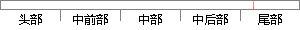

点击添加按钮进入问卷添加页面，填写好问卷基本信息点击保存，系统会自动返回到问卷列表页面，并将问卷保存到列表中。
片段位置图

相似结果|
1
原句片段： 点击添加按钮进入问卷添加页面，填写好问卷基本信息点击保存，系统会自动返回到问卷列表页面，并将问卷保存到列表中。
相似片段 1：系统中、创建问卷首先需要填写问卷的一些基本信息 ...跳转到问卷试题列表页面 完善该问卷内容问题及内容 ...保存目录在设置新问卷时点击问卷管理页面的添加按钮 ...
|
※ 片段修改建议 ※
近似词参考：- 保存：保留 留存 生存
- 系统：体系
- 自动：主动
- 保存：保留 留存 生存
系统自动生成语句： 点击添加按钮进入问卷添加页面，填写好问卷基本信息点击保留，体系会主动返回到问卷列表页面，并将问卷保留到列表中。
注：本片段修改建议为系统自动生成，仅供参考。